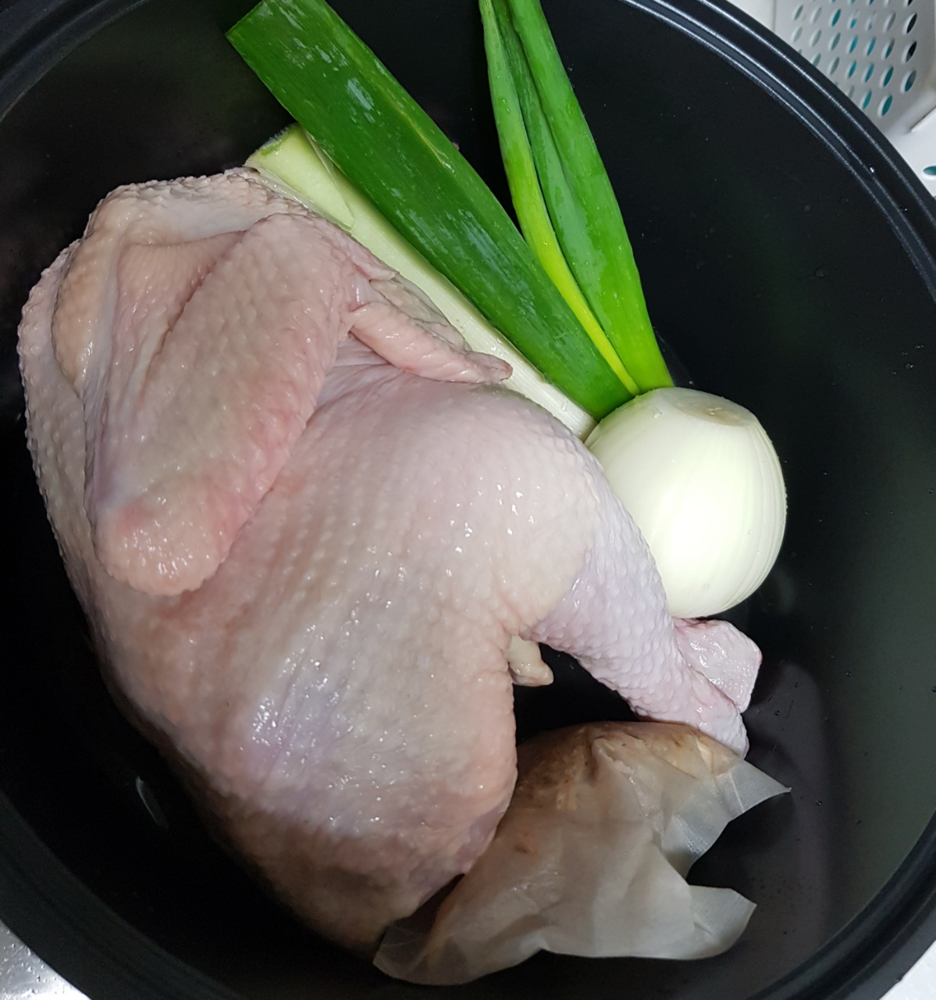

삼계탕

- 재료
작은 닭(500g) 2마리 또는 큰 닭(1kg) 1마리, 삼계탕용 한약재, 통마늘 10알, 대추 5개,
대파 1개, 양파 1개, 물 2L, 소금과 후추 취향대로
- 조리순서
- 먼저 닭을 손질합니다. 꼬리와 날개 끝 부분을 자르고, 남아있는 지방과 안의 내장을 깨끗히 제거해줍니다.
손질한 닭을 흐르는 물에 씻은 후, 다리에 칼집을 내서 서로 꼬아줍니다.
닭을 담은 용기와 싱크대 주변은 세제로 닦아서 청소합니다.
- 냄비에 물 2L를 넣고 닭과 삼계탕용 한약재, 통마늘 10알, 대추 5개, 대파 1개, 양파 1개를 넣어서
뚜껑을 닫고 센 불로 10분간 끓입니다. 중불로 낮춰서 30분동안 마저 끓입니다.
- 닭이 익으면 육수용 재료는 모두 건져서 빼냅니다.
마지막에 소금으로 간을 하고, 소금과 후추를 취향껏 섞어 닭을 찍어 먹으면 됩니다.